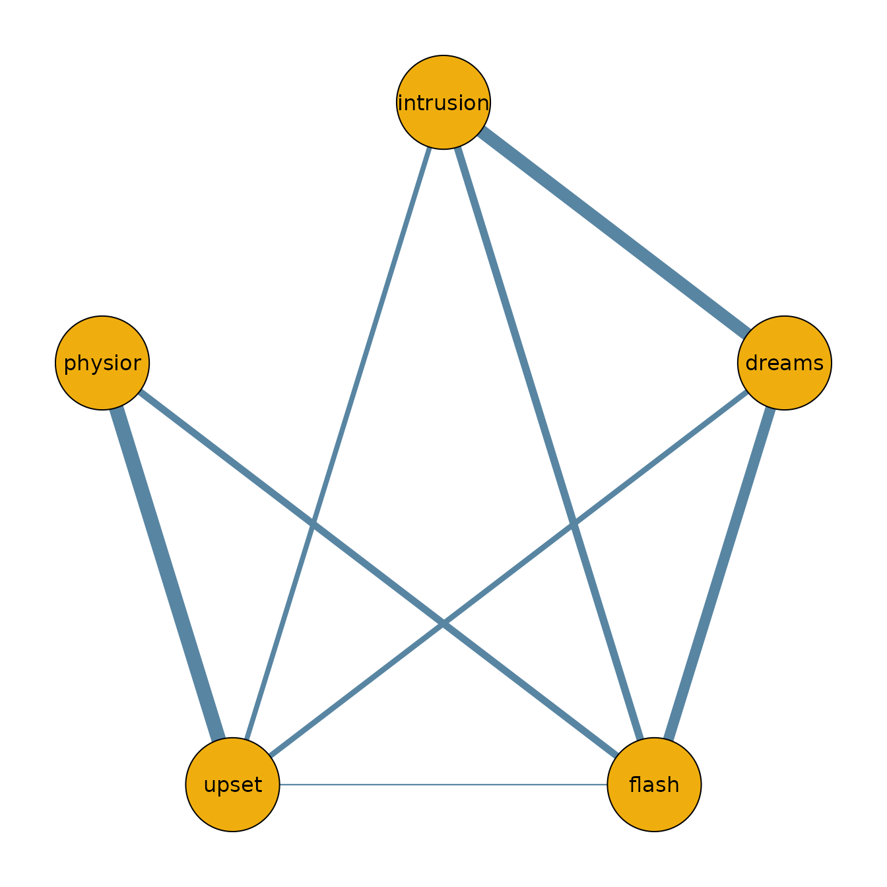

Introduction
The bgms package implements Bayesian methods for analyzing graphical models of binary and ordinal variables. It estimates main effects (category thresholds) and pairwise interactions in an ordinal Markov random field (MRF), with optional Bayesian edge selection via spike–and–slab priors. The package provides two main entry points:
-
bgm()for one-sample designs (single network), -
bgmCompare()for independent-sample designs (group comparisons).
This vignette walks through the basic workflow: fitting a model, summarizing posterior output, and visualizing results.
Wenchuan dataset
The dataset Wenchuan contains responses from survivors
of the 2008 Wenchuan earthquake on posttraumatic stress items. Here, we
analyze a subset of the first five items as a demonstration.
Fitting a model
The main entry point is bgm() for single-group models
and bgmCompare() for multiple-group comparisons.
fit = bgm(data, seed = 1234)
#> Warning: There were 7 rows with missing observations in the input matrix x.
#> Since na_action = listwise these rows were excluded from the analysis.Note: During fitting, progress bars are shown in interactive sessions. In this vignette, they are suppressed for clarity. Sampling can take a while; the progress bars usually help track progress.
Posterior summaries
summary(fit)
#> Posterior summaries from Bayesian estimation:
#>
#> Category thresholds:
#> mean mcse sd n_eff Rhat
#> intrusion(1) 0.478 0.005 0.230 1824.541 1.005
#> intrusion(2) -1.901 0.010 0.326 1014.457 1.004
#> intrusion(3) -4.837 0.017 0.520 941.517 1.004
#> intrusion(4) -9.497 0.028 0.839 890.032 1.003
#> dreams(1) -0.594 0.004 0.189 1862.815 1.000
#> dreams(2) -3.797 0.010 0.336 1173.364 1.001
#> ... (use `summary(fit)$main` to see full output)
#>
#> Pairwise interactions:
#> mean sd mcse n_eff Rhat
#> intrusion-dreams 0.630 0.002 0.065 1840.464 1.001
#> intrusion-flash 0.337 0.001 0.062 2310.716 1.002
#> intrusion-upset 0.199 0.068 0.004 366.082 1.011
#> intrusion-physior 0.192 0.071 0.005 170.206 1.009
#> dreams-flash 0.499 0.001 0.060 1819.602 1.001
#> dreams-upset 0.230 0.055 0.001 1569.670 1.005
#> ... (use `summary(fit)$pairwise` to see full output)
#>
#> Inclusion probabilities:
#> mean sd mcse n0->0 n0->1 n1->0 n1->1 n_eff Rhat
#> 1.000 0.000 0 0 0 3999
#> 1.000 0.000 0 0 0 3999
#> 0.967 0.180 0.015 125 9 9 3856 143.989 1.182
#> 0.940 0.238 0.024 230 11 11 3747 99.558 1.077
#> 1.000 0.000 0 0 0 3999
#> 0.998 0.045 0.001 5 3 3 3988 925.355 1.135
#> ... (use `summary(fit)$indicator` to see full output)
#>
#> Note: NA values are suppressed in the print table. They occur when an indicator
#> was constant (all 0 or all 1) across all iterations, so sd/mcse/n_eff/Rhat
#> are undefined; `summary(fit)$indicator` still contains the NA values.
#>
#> Use `summary(fit)$<component>` to access full results.
#> See the `easybgm` package for other summary and plotting tools.You can also access posterior means or inclusion probabilities directly:
coef(fit)
#> $main
#> [,1] [,2] [,3] [,4]
#> intrusion 0.4783754 -1.901174 -4.837418 -9.496582
#> dreams -0.5944969 -3.797236 -7.127498 -11.568512
#> flash -0.1001654 -2.561521 -5.360032 -9.672125
#> upset 0.4066112 -1.329714 -3.413250 -7.103469
#> physior -0.6107531 -3.162836 -6.212245 -10.557183
#>
#> $pairwise
#> intrusion dreams flash upset physior
#> intrusion 0.000000000 0.630465218 0.3369391 0.1915779 0.005329141
#> dreams 0.630465218 0.000000000 0.1986656 0.4992778 0.007130963
#> flash 0.336939066 0.198665557 0.0000000 0.2301909 0.309372051
#> upset 0.191577877 0.499277762 0.2301909 0.0000000 0.712758036
#> physior 0.005329141 0.007130963 0.3093721 0.7127580 0.000000000
#>
#> $indicator
#> intrusion dreams flash upset physior
#> intrusion 0.00000 1.0000 1.0000 0.93975 0.0570
#> dreams 1.00000 0.0000 0.9665 1.00000 0.0745
#> flash 1.00000 0.9665 0.0000 0.99800 1.0000
#> upset 0.93975 1.0000 0.9980 0.00000 1.0000
#> physior 0.05700 0.0745 1.0000 1.00000 0.0000Network plot
To visualize the network structure, we threshold the posterior inclusion probabilities at 0.5 and plot the resulting adjacency matrix.
library(qgraph)
median_probability_network = coef(fit)$pairwise
median_probability_network[coef(fit)$indicator < 0.5] = 0.0
qgraph(median_probability_network,
theme = "TeamFortress",
maximum = 1,
fade = FALSE,
color = c("#f0ae0e"), vsize = 10, repulsion = .9,
label.cex = 1, label.scale = "FALSE",
labels = colnames(data))
Next steps
- For comparing groups, see
?bgmCompareor the Model Comparison vignette. - For diagnostics and convergence checks, see the Diagnostics vignette.